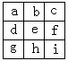
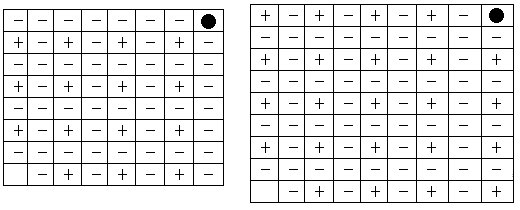

习题九解答
1.解：为了叙述方便，在右图中标上字母a、b、c、d、e、f、g、h、i。此题与例1几乎完全一样，只是把1改为10，把3～10改为8～1，把得分多者胜改为得分少者胜.因此，甲在必胜策略上也相仿，只需把填大（小）数改为填小（大）数.具体如下（记号见例1）：

（甲1，d10）.①若（乙1）不在f处填数，则（甲2）在f处填余下来的最大数.甲胜。
②若（乙1，f1）（乙当然在已方f处填最小数），则（甲2，b2）.甲胜。
2.解：1、3、7、9这四个数各有两种可能使三个数在一条直线上，2、4、6、8各有三种可能，5有四种可能。
设甲先选.为了取胜，甲自然选5.乙选2.有以下几种可能：
①甲选4，乙必选6，甲必选7，乙必选3.无胜负.（甲选6与选4类似）。
②甲选9，乙必选1，甲选任一已不能获胜.（甲选7与选9类似）。
③甲选1，3是类似的，显然不能获胜。
④甲选8也显然不能获胜。
如果甲不先选5，而先选其他任一数，乙即选5.显然无胜负.因此先选者无必胜策略.
3.由例2知，采用倒推法分析得下图

我们仍然用“＋”表示胜位，“-”表示负位。
对于8×8的棋盘，先走的人有必胜的策略。
对于9×9的棋盘，后走的人有必胜的策略。
4.解：根据例3，当只有两堆球，且两堆球的个数相同且个数不等于1时，先拿的必败.所以甲先取时，甲把A堆中的29个球全部取走，这时留给乙的是两堆球数相同且个数不等于1的局面.然后按照两堆球游戏的策略，甲就能获胜.